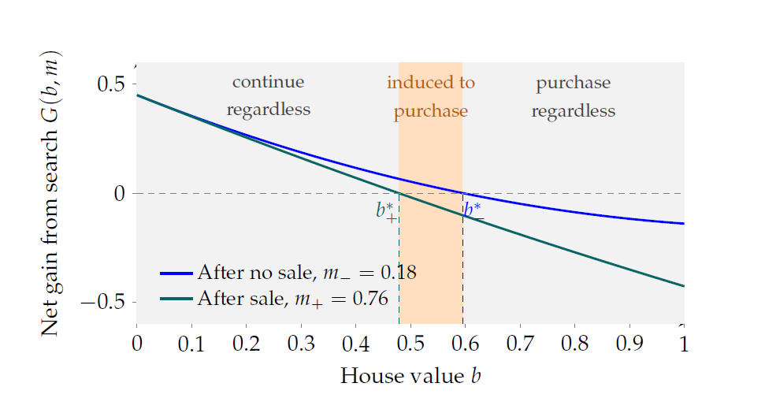

<!doctype html>
<html lang="en">
  <head>
    <meta charset="utf-8">
    <meta name="viewport" content="width=device-width, initial-scale=1">
    <title>Research | Ning Jia</title>
    <link rel="stylesheet" href="style.css">
  </head>
  <body>
    <div class="wrapper">
      <nav aria-label="Main navigation">
        <ul>
          <li><a href="index.html">Home</a></li>
          <li><a href="CV.pdf">CV</a></li>
          <li><a href="research.html">Research</a></li>
          <li><a href="teaching.html">Teaching</a></li>
        </ul>
      </nav>
      <hr>

      <main>
        <h1>Research</h1>

        <h2>Job Market Paper</h2>
        <div class="job-market">
          <div class="job-market-layout">
            <div>
                      <p class="paper-title">
          <a href="assets/Option Loss and Transaction Cascades.pdf" target="_blank">
            Option Loss and Transaction Cascades in the Housing Market
            </a>
        </p>
              <p class="muted">with Ruiyu Zhu</p>
          <details class="abstract">
          <summary>Abstract</summary>
          <p>
            In dynamic housing markets, a sale can affect not only the transacting parties, but also other buyers who had considered the property. We develop a dynamic
sequential search model in which property exit creates imperfect recall and signals tighter market conditions, generating transaction cascades. Using
data from a major Chinese housing platform, we exploit quasi-random sales of previously inspected properties as option-loss shocks and find that they
raise affected buyers’ purchase probability by 67%. In contrast, sales of similar nearby properties that were not visited have little effect, showing that entry
into the buyer’s choice set is the key channel. The effect is stronger in tighter markets and among buyers with larger choice sets. A back-of-the-envelope
quantification suggests that these cascades account for about 30% of observed market-level transaction activity. Option loss also reduces the number of property
visits, broadens search criteria, and is associated with higher transaction prices. The results highlight imperfect recall in dynamic search as a microlevel
channel through which housing market activity can be amplified.
        </p>

              <p class="muted">Presentation: 2nd Zurich–Oxford Doctoral Symposium on Real Estate Markets.</p>
            </div>
            <figure style="display: flex; gap: 12px;">
  

  
</figure>
          </div>
        </div>

        <h2>Working Papers</h2>
        <div class="paper">
          <p class="paper-title">
          <a href="assets/RouwendalSniekersJia_BTL.pdf" target="_blank">
            Borrowing Constraints and the Rise of the Private Rental Sector
            </a>
        </p>
          <p class="muted">with Jan Rouwendal and Florian Sniekers</p>
          <details class="abstract">
          <summary>Abstract</summary>
          <p>
            Borrowing constraints may prevent individual households from buying a home, but do they also reduce the homeownership rate and expand the private rental sector? 
            We develop an empirical strategy that accounts for equilibrium spillovers, based on an assignment model in which investors convert owner-occupied homes into rentals for credit-constrained households. 
            This framework identifies both constrained households and those affected by investment spillovers, allowing quasi-experimental evidence to be interpreted as aggregate effects. Applying the method to Dutch mortgage policy tightenings from 2012 to 2016, we find that borrowing constraints 
            significantly expanded the private rental sector, accounting for up to 75% of its growth through 2017. Our findings imply that borrowing constraints play a central role in shaping tenure outcomes and 
            housing market composition.
        </p>
      </details>
          <p class="muted">
            Presented at UEA North American, UEA European, EEA-ESEM, IAAE,
            AREUEA International, Federal Reserve Bank of San Francisco,
            ReCapNet, Zurich-Bern Workshop, ESWC, and AREUEA-ASSA.
          </p>
        </div>

          <div class="paper">
          <p class="paper-title">
          <a href="assets/IPO.pdf" target="_blank">
            Initial Public Offerings and Local Entrepreneurship: Evidence from China (Under Review)
            </a>
          <p class="muted">with Ge Yang</p>
          <details class="abstract">
          <summary>Abstract</summary>
          <p>
            This paper examines how a county’s first IPO affects local entrepreneurial activity in China. 
            Using a county-level panel spanning 1990–2022 and a staggered difference-in-differences design, we find that a county’s first IPO reduces both new firm registrations and the stock of active firms by 
            approximately 8%, while having no significant effect on firm exit. The decline in entry is concentrated among private firms and firms operating in the same industry as the IPO firm. 
            Moreover, the effect is stronger following IPOs by firms with larger employment, but does not vary with either their capital or local access to finance, pointing to labor market reallocation as the primary mechanism.
            Consistent with this interpretation, the negative effect is more pronounced for state-owned enterprise IPOs and in less-developed regions, where competition for local labor is likely to be stronger. 
            These findings show that IPOs can crowd out, rather than stimulate, local entrepreneurial activity, highlighting an important local resource reallocation effect of public listings.
        </p>
      </details>
        </div>

        <div class="paper">
          <p class="paper-title">List Prices in Segmented Housing Markets</p>
          <p class="muted">with Jan Rouwendal and Florian Sniekers</p>
          <details class="abstract">
          <summary>Abstract</summary>
          <p>
            We study the role of list prices in frictional and segmented housing markets. 
            Using data from a large online housing platform in Beijing, where buyers state their preferred ranges for prices and housing characteristics, we show that list prices position listings into different buyer segments. 
            Exploiting list price revisions in a difference-in-differences design, we find that both downward and upward revisions attract buyers from other segments. 
            Downward revisions increase visitor flows persistently, leading to faster sales at lower prices, while upward revisions generate short-lived interest, higher sale probability, and higher transaction prices. 
            We develop a search model with segmentation and time-consuming inspections that rationalizes these patterns and explains under what conditions sellers may  want to change their list price.
          </p>
          </details>
          <p class="muted">
            Presented at UEA North American 2024, Chinese Summer Meeting in Urban
            Economics 2024, BVRN Workshop 2025, UEA European 2026,  EEA-ESEM 2026 and AREUEA-ASSA 2027.
          </p>
        </div>

        <div class="paper">
          <p class="paper-title">New Listings and Housing Market Congestion</p>
          <details class="abstract">
          <summary>Abstract</summary>
          <p>
           The housing market is a dynamic market, in which listings continuously enter and exit and buyers repeatedly reallocate their attention across available
options. How newly listed xaffect the market outcomes of existing listings is therefore an important question. This paper examines the congestion effects of
new listings on existing listings, focusing on the number of visits, sale probabilities, and listing prices. Using a unique micro-level dataset and a difference-in-differences strategy, I find that new listing shocks reduce existing sellers’
weekly visits by 27% to 35%, lower their weekly transaction probability by 18% to 24%, and reduce their likelihood of raising the listing price by 16%
to 22%. The effects are stronger when new listings are priced below existing listings and when the listing-time gap between new and existing listings is
larger. My study provides micro-level evidence on how supply shocks shape the search and matching process in the housing market.
          </p>
          </details>
          <p class="muted">Presented at UEA European 2025 and AREUEA International Conference 2025.</p>
        </div>

        <h2>Pre-doc Publication</h2>
        <p class="paper-title">The Causes and Consequences of China's Municipal Amalgamations: Evidence from Population Redistribution</p>
        <p>Ning Jia and Huiyong Zhong. <em>China &amp; World Economy</em>, 30, 174-200, 2021.</p>

        <h2>Research Experience</h2>
        <ul>
          <li>Research Assistant for Ming Lu, 2018-2020.</li>
          <li>Research Assistant for Hans R.A. Koster, 2025-2026.</li>
        </ul>

        <h2>Presentations</h2>
        <ul class="presentation-list">
          <li><span class="year">2027</span><span>AREUEA-ASSA Conference, Washington D.C. (planned).</span></li>
          <li><span class="year">2026</span><span>AREUEA-ASSA Conference, Philadelphia; UEA European Meeting, Barcelona (presented by co-author); EEA-ESEM, Dublin (planned); Zurich-Oxford Doctoral Symposium (planned).</span></li>
          <li><span class="year">2025</span><span>UEA European Meeting, Berlin; BVRN Workshop, Amsterdam; AREUEA International Conference, Barcelona; Zurich-Bern Real Estate Finance and Economics Workshop, Zurich; Econometric Society World Congress, Seoul.</span></li>
          <li><span class="year">2024</span><span>UEA North American Meeting, Washington D.C.; UEA Summer School, Geneva; IAAE Annual Conference, Xiamen; ReCapNet Conference, Stockholm; Federal Reserve Bank of San Francisco.</span></li>
          <li><span class="year">2021</span><span>CEA Forum (Online); CCER SI, Beijing; Seminar CUFE, Beijing.</span></li>
        </ul>
      </main>

      <footer>© Ning Jia 2026</footer>
    </div>
  </body>
</html>
